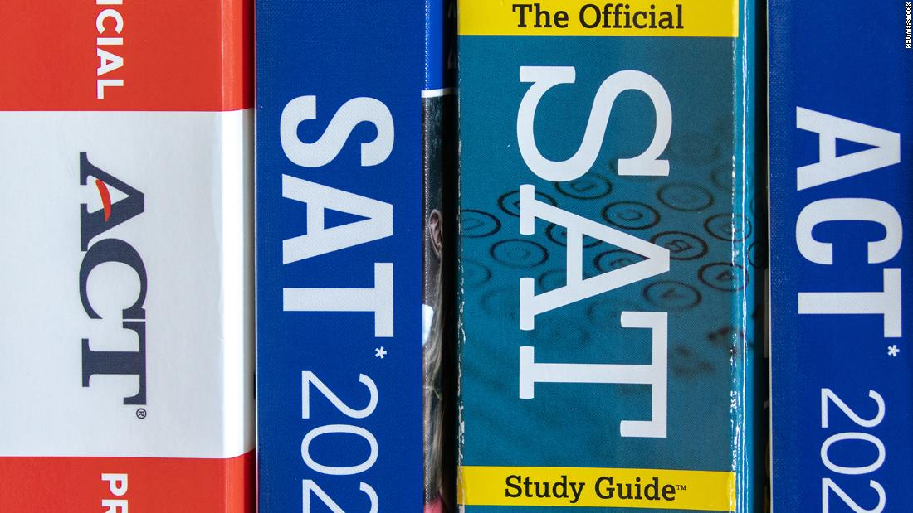

Additional Materials
Essays and Supplementals
One of the most personal parts of the college application process is writing your essays. Your main personal statement is your chance to show colleges who you are beyond grades and test scores — your values, experiences, and what matters to you. Many schools also require supplemental essays with specific prompts, like why you want to attend that college or how you’ll contribute to their campus. These can feel overwhelming, but they’re actually a great opportunity to highlight different sides of yourself. Start early, brainstorm honestly, and don’t be afraid to revise. If you're not sure where to begin, the College Essay Guy: Personal Statement Guide is a helpful resource that breaks down the process step by step and offers tips on finding your voice and crafting a strong narrative.
Tips for Writing a Great Essay
- Be yourself and write in your own voice — authenticity stands out more than trying to sound overly polished or perfect.
- Use specific examples and real moments from your life to show who you are, instead of just listing qualities or achievements.
- Stay focused on the prompt and make sure your essay clearly answers the question being asked.
- Don’t settle for a first draft — revise multiple times, read it out loud, and ask someone you trust to give you honest feedback.
Test Scores
Many colleges are now test-optional, which means you get to decide whether submitting SAT or ACT scores will help your application. If your scores are strong and fall within or above a school’s average range, sending them could give your application a boost. But if your scores aren’t as high as you’d like — or if you weren’t able to test — you can often leave them out without it hurting your chances. Some schools or scholarships may still require scores, so it’s important to read each college’s policy carefully. Overall, test scores are just one part of your application, and choosing to submit them should be a strategic decision based on where they’ll work in your favor.
What to Remember
- As test scores can take time to process and reach schools, submit them well before the application deadlines.
- Use official reports because many colleges require scores to come directly from the testing agency, so don’t rely on self-reported scores.
- Some schools may still require scores for specific programs or scholarships, so review each school’s policy carefully.
- Ensure the name and details on your test account match your application to avoid any delays or confusion.
Additonal Documents
In addition to your application and test scores, most colleges will require or recommend submitting additional documents like letters of recommendation and transcripts. Transcripts provide a complete record of your academic history and achievements. Letters of recommendation give insight into your character, work ethic, and potential. Some schools may also recommend adding a resume, which highlights your extracurriculars, work experience, and achievements outside the classroom. Be sure to request these materials early, especially if they require input from others, and confirm that they’re sent on time. Each school may have specific requirements, so it's important to double-check exactly what’s needed for each application.
Knowing where to get and submit them
- Letters of recommendation, transcripts, and other documents can take time to prepare, so make sure to ask for them well in advance.
- Some schools want documents sent directly through their portals, while others may accept them via email or mail, so make sure to check the submission methods.
- Make sure that your recommenders and school officials have the correct information for where to send documents.
- Keep a record of when and how each document was submitted to ensure nothing is missing or delayed.